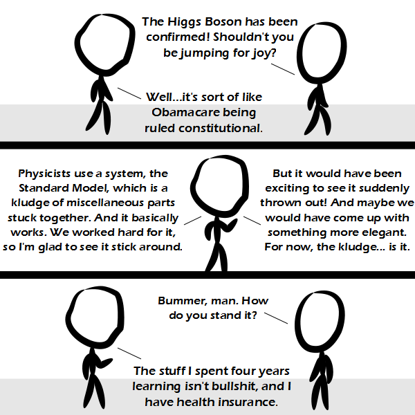

Comic JK 937
When I Feel Like It
⇤
<
?
>
⇥

⇤
<
?
>
⇥
Forum
.
RSS
.
Digg
.
Facebook
.
Reddit
.
Twitter
.
Stumbleupon
http://www.reddit.com/r/ComicJK/comments/14m348/so_its_been_6_months/ Your mother's bosom has been confirmed. Shouldn't you be jumping for joy? gonads gonads gonads gonads go >and strife! jhI asthfse ghjjafsamgfhte gf LOL lol Hi fondly I remember the day I finally understood gonads; their purpose and their function. it was just like they always said it would be: the heavens opened and the angelic choirs sang, and before me was revealed Nature in all her stateless beauty. and, yea, though she was thus unclothed, yet was she unashamed, for the great gonad spake thus: I give unto thee the gonadic arts, and also I give these gonad transformers, the holy ContT, and ReaderT; ListT, ErrorT, and MaybeT; RWST, StateT, and WriterT, lazy and strict; even IdentityT I give unto thee. The Gonoids also I give unto your care, and the Tools I deem specially for your use. MOLPY MOLPY >WTF keep your Time slag away from here... If only you were here today... *Wistful look* JE T'AIME KYA! And all the creationists say that God is real because the H.B. is called The God Particle. -.- Welp.